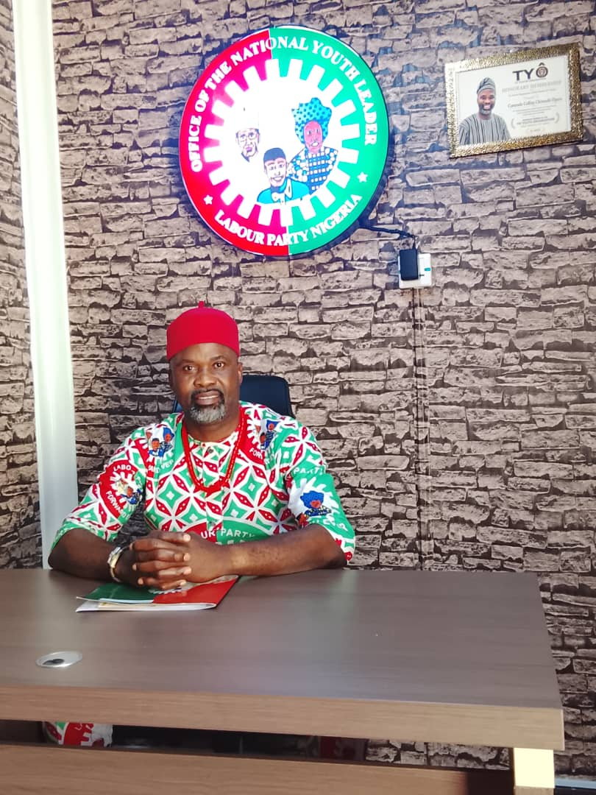
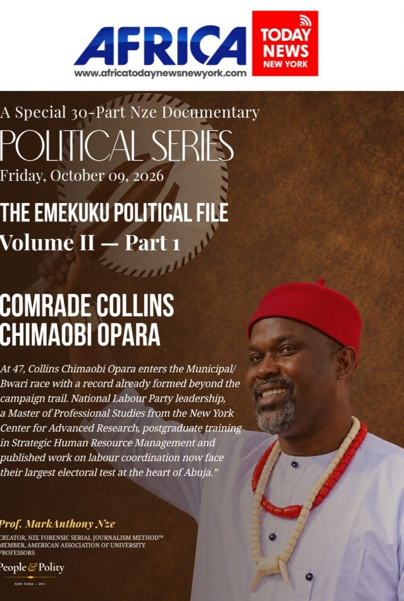
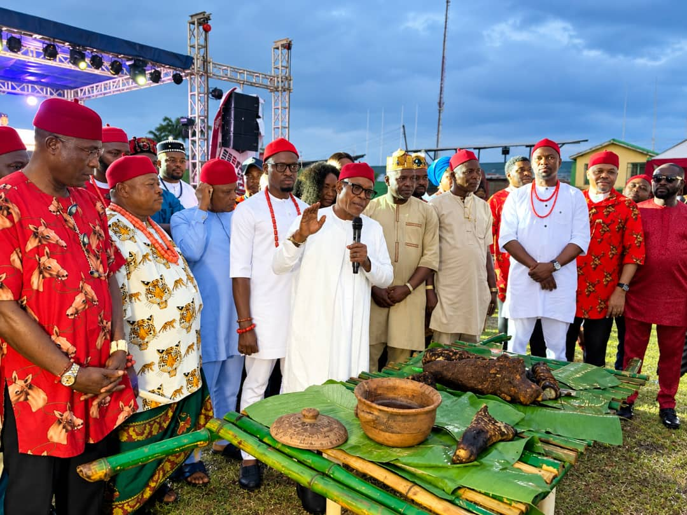

Research & Development
An interest in Strategic Human Resource Management, research and approaches that strengthen human capacity and organisational development.
Leadership through unity, inclusion, opportunity and effective representation.

National Youth Leader, Labour Party
Comrade Collins Chimaobi Opara is a researcher, consultant, author and political leader serving as the National Youth Leader of the Labour Party. He is the party's candidate for AMAC/Bwari Federal Constituency in the 2027 House of Representatives election.
With a professional interest in Strategic Human Resource Management and a research association with the New York Center for Advance Research (NYCAR), his interests include leadership, human capacity development, organisational development and public service.
His political vision is guided by the principles of unity, fairness, inclusion and equal opportunities for everyone living within the constituency.
Through the Non-Indigenes Unity Mandate, he seeks to encourage stronger relationships between indigenes and non-indigenes, promote meaningful participation in governance and support community-centred development.
His aspiration is founded on a broader development philosophy: Human Socio-Capital Empowerment and Development — a people-centred approach that recognises the importance of investing in people, skills, opportunities and communities.
Bringing together research, professional experience and a commitment to people-centred representation.
An interest in Strategic Human Resource Management, research and approaches that strengthen human capacity and organisational development.
Political engagement through the Labour Party, with a focus on youth leadership, participation and inclusive representation.
Promoting dialogue, consultation and constructive relationships across communities within AMAC/Bwari.
Selected media coverage offering an independent perspective on leadership, public life and the responsibilities of representation.

Published on 9 October 2026, this feature opens Volume II of The Emekuku Political File, examining the political journey, leadership experience and public record of Comrade Collins Chimaobi Opara.
The article traces his political development from youth canvassing in Emekuku and student organising at Ebonyi State University to his subsequent involvement in labour activities, campaign coordination and party organisation in Abuja.
It also examines his emergence as the Labour Party's National Youth Leader and his participation in the party's national leadership structures following the elective national convention held in Umuahia on 28 April 2026.
A significant part of the feature considers his documented labour involvement, including an NLC nomination dated 23 April 2026 for participation in the 114th Session of the International Labour Conference in Geneva, held from 1 to 12 June 2026.
The article places particular emphasis on the 2027 Municipal/Bwari federal contest and the responsibility of building broad, credible and accountable representation across Abuja communities. It considers how experience in organisation, labour engagement and political leadership may contribute to that responsibility.
Read Original PublicationLeadership is strengthened through listening, dialogue and engagement with the people. This section showcases selected community engagements and events attended by the candidate.

Community engagement provides an opportunity to listen to residents, understand local concerns and exchange ideas about the future of the constituency.
Through dialogue and participation, the campaign seeks to encourage a shared vision for a more inclusive and developed AMAC/Bwari.
A united AMAC/Bwari where every community has a voice, every citizen has an opportunity, and development reaches everyone.
A united AMAC/Bwari where indigenes and non-indigenes can participate meaningfully and thrive together.
Promoting skills development, employment opportunities and economic empowerment for young people across the constituency.
Advocating better infrastructure, improved public facilities and development that reaches communities across the constituency.
Promoting responsive representation that recognises the interests, contributions and participation of all communities.
Sustainable constituency development begins with people. Investing in education, skills, enterprise, healthcare and inclusive opportunities can help build stronger communities.
Papa, Mama, Pikin — Together for a Better AMAC/Bwari.
A constituency where unity creates opportunity and representation works for everyone.
Explore Our Manifesto